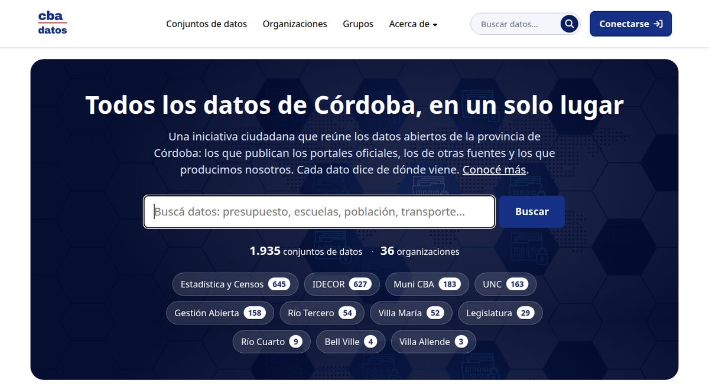
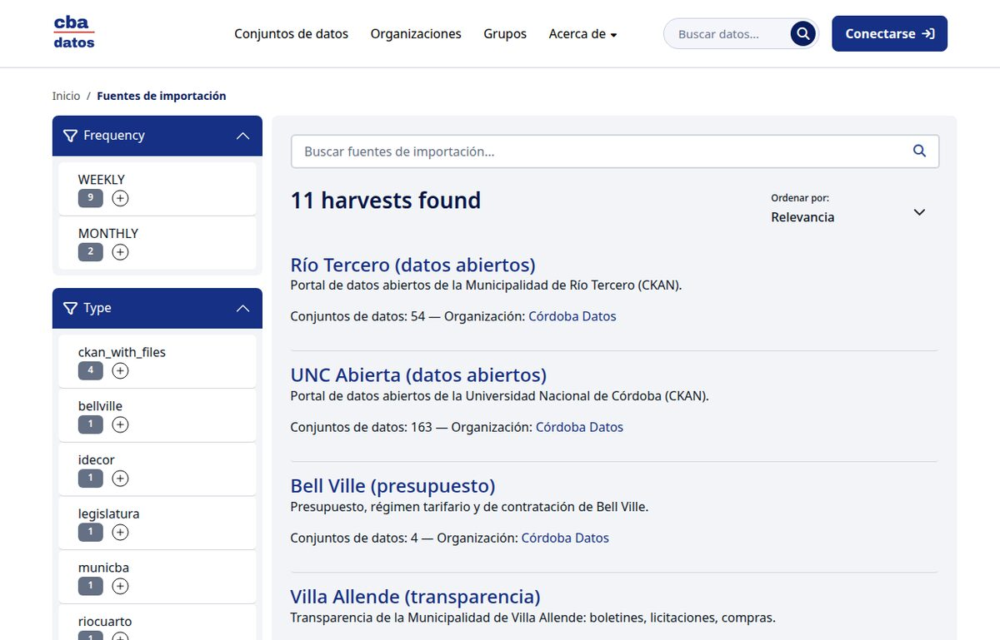
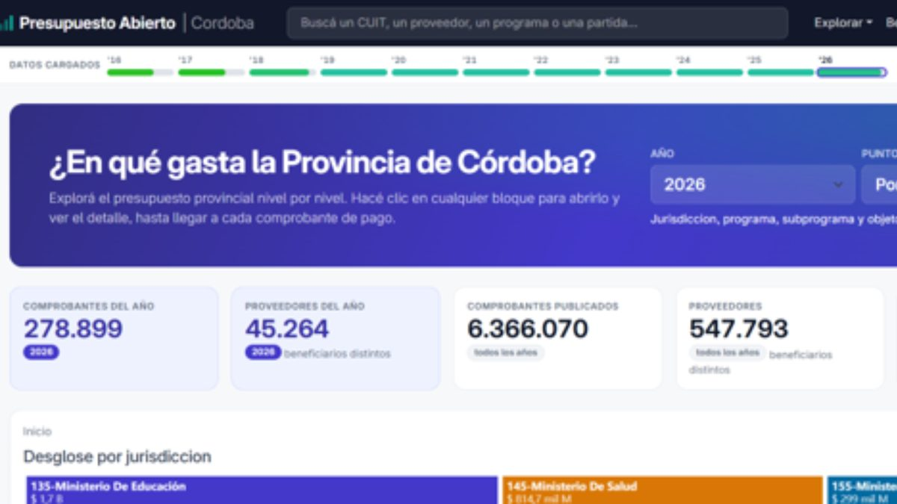
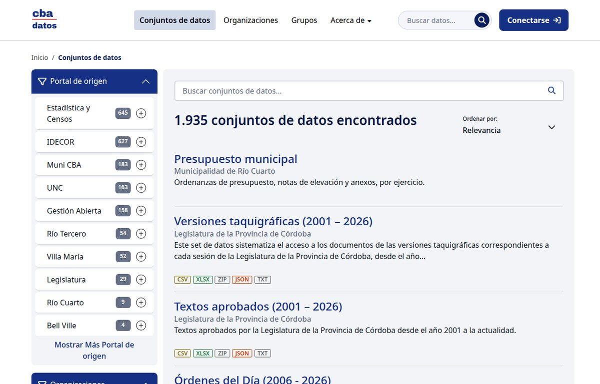
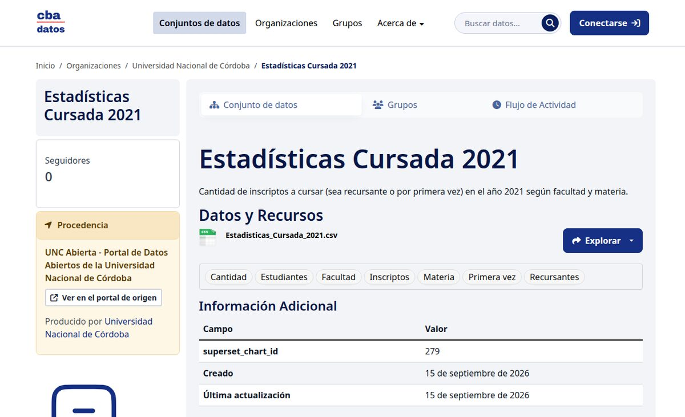
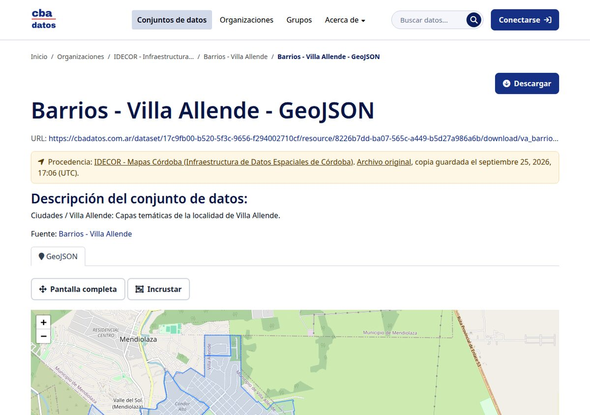
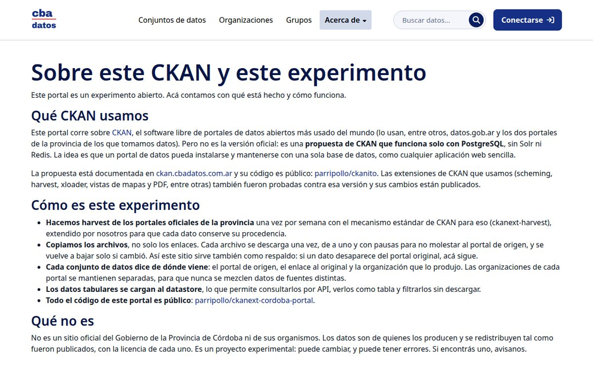
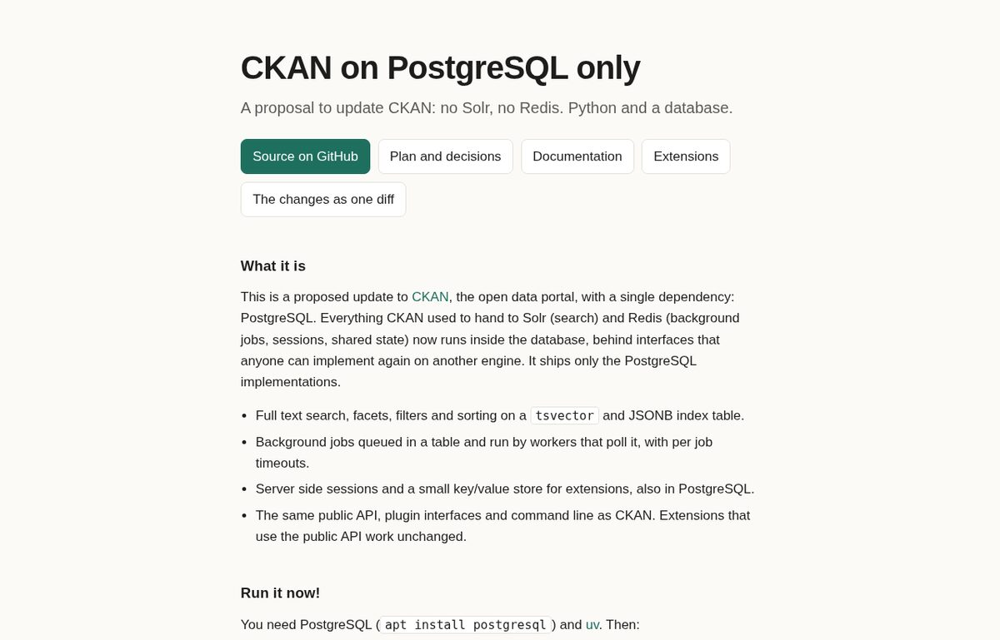
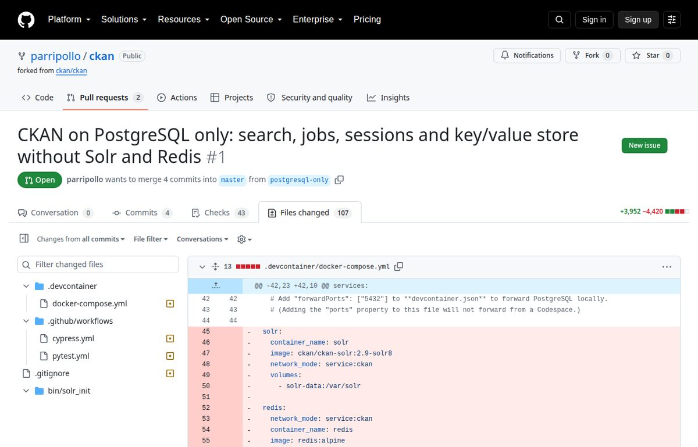

Todos los datos de Córdoba en un solo lugar (y sobre un CKAN diferente)
Hay un portal nuevo de datos abiertos de Córdoba: cbadatos.com.ar. No es oficial, es una iniciativa personal. Reúne en un solo lugar lo que publican los portales de la provincia, de algunos municipios, de la Legislatura y de la UNC: hoy son 1.935 conjuntos de datos de once fuentes distintas. En este post van dos historias: cómo se juntaron tan rápido todos esos datos y el experimento técnico que corre por debajo, un CKAN que funciona sin Solr ni Redis.

Parte 1: todos los datos de Córdoba en un solo lugar
Harvesting: la parte fácil
CKAN tiene desde hace años un mecanismo para cosechar (harvest) datos de otros portales. Si el portal de origen también es CKAN, traer todo su catálogo es casi trivial: se configura la URL, se elige cada cuánto actualizar y listo. CKAN habla con CKAN a través de su API y trae datasets, recursos, organizaciones y metadatos.
Eso fue lo que pasó con los dos portales de la provincia que migramos este año, datosgestionabierta.cba.gov.ar y datosestadistica.cba.gov.ar (lo conté en este post), con el portal de datos abiertos de la UNC que también hicimos desde cero y con el portal de Río Tercero. Cuatro portales CKAN, más de mil conjuntos de datos, en muy poco tiempo. Es lo que pasa cuando los portales usan software libre y estándares abiertos: se pueden conectar entre ellos muy facilmente.

Le agregamos al cosechador de CKAN dos cosas que nos parecían importantes:
- Copiar los archivos, no solo los enlaces. Cada archivo se descarga una vez, de a uno y con pausas para no molestar al portal de origen. Así el sitio sirve también como respaldo: si un dato desaparece del portal original, acá sigue.
- Que cada dato diga de dónde viene. Cada conjunto de datos guarda el portal de origen, el enlace al original y la organización que lo produjo. Las organizaciones de cada portal quedan separadas para que no se mezclen datos de fuentes distintas.
Los portales que no son CKAN
La parte difícil fueron los que no usan CKAN. Para cada uno hubo que escribir un cosechador personalizado:
- Gobierno Abierto de la Municipalidad de Córdoba (donde trabajé tres años): tiene una API abierta, así que fue de los más simples.
- IDECOR - Mapas Córdoba, el geoportal de la provincia: dos catálogos JSON que hubo que cruzar por nombre de capa. Una capa es un conjunto de datos con su GeoJSON, su simbología, sus metadatos y sus servicios WMS/WFS.
- Datos abiertos de Villa María: sin API, leyendo el sitemap y cada página HTML.
- Portal de datos abiertos de la Legislatura: páginas de WordPress leídas por su API REST.
- Transparencia de Río Cuarto, Transparencia de Villa Allende y el presupuesto de Bell Ville: cada uno con su propia forma de publicar documentos.
Todos se actualizan solos, la mayoría una vez por semana.
El gran portal que falta
Hay uno que todavía no está: el portal de transparencia de la Provincia de Córdoba, el que (entre otras cosas) publica cada comprobante de pago del Estado provincial. Es probablemente el conjunto de datos más valioso de la provincia y también el más difícil de usar. Tenemos esos datos disponible en un portal cerrado hecho con la Red Ruido, todavía no esta listo para compartir, lo conté en este post.

Por qué juntar todo
Los datos de Córdoba existen pero están distribuidos en muchos lugares distintos, cada uno con su buscador, su formato y su forma de organizar las cosas.

Tenerlos en un solo lugar cambia la pregunta: ya no es "¿dónde está este dato?" sino "¿qué hay sobre este tema?". Un buscador sobre todo, filtros por portal de origen, por organización, por formato, 166 grupos temáticos. Y una sola API para todo lo de la provincia, que es algo que ningún organismo por sí solo puede ofrecer.

Además todos los datos tabulares se cargan al datastore de CKAN, así que se pueden consultar por API, ver como tabla y filtrar sin descargar nada. Los datos geográficos de IDECOR (muchos, son 627 conjuntos de datos) se ven en un mapa.

Todo el código del portal es público: parripollo/ckanext-cordoba-portal. Ahí están los cosechadores de cada fuente, por si alguien quiere reutilizarlos en otro lado.
Parte 2: un CKAN sin Solr ni Redis
Si entrás a la página "Sobre este CKAN" vas a ver que este portal no corre sobre el CKAN oficial.

El problema
Un sitio CKAN son tres servicios: PostgreSQL para el catálogo, Apache Solr para las búsquedas y Redis para las tareas en segundo plano. Cada uno hay que instalarlo, monitorearlo y actualizarlo en sintonía con la versión de CKAN. Para un portal chico o mediano (que son casi todos) es mucha infraestructura alrededor de lo que al final es una aplicación Python sobre una base de datos.
Simplificar CKAN no es un problema nuevo, se ha discutido muchas veces pero el desafió es muy grande.
El experimento
Así que lo intentamos. La propuesta está documentada en ckan.cbadatos.com.ar y el código es público en parripollo/ckanito. La idea es que CKAN sea para los datos abiertos lo que Django es para las aplicaciones web: instalar, apuntar a una base de datos y correr.

En resumen:
- La búsqueda (texto completo, facetas, filtros y orden) corre sobre el full text search de PostgreSQL.
- Las tareas en segundo plano son filas en una tabla que los workers toman con
SELECT ... FOR UPDATE SKIP LOCKED. - Las sesiones y un pequeño almacén clave/valor para extensiones también viven en PostgreSQL.
- Cada una de esas piezas quedó detrás de una interfaz. Si alguien quiere volver a usar Solr o Redis (vade retro!) puede escribir su implementación en una extensión sin tocar el núcleo. Nosotros (?) solo hicimos la de PostgreSQL. Creo que el error original de CKAN no fue usar Solr y Redis sino hablar con ellos desde todos lados, sin un contrato que se pueda reemplazar.
- La API pública, las interfaces de plugins y la línea de comandos son las mismas. Pasan todos los tests de CKAN (unos 3.500), los linters y la construcción de la documentación.
- Las extensiones se probaron una por una. La mayoría funcionaron sin cambios o con cambios mínimos. Harvest y spatial necesitaron un backend nuevo.
Todos los cambios están juntos en un solo pull request contra un fork de CKAN, que existe solo para poder leer la diferencia: 107 archivos, unas 4.000 líneas agregadas y otras tantas borradas. La mayor parte de lo que se borra es Solr.

Hay mucho para seguir revisando. El trabajo fue mayormente hecho por IA (Claude, Fable 5).
Nosotros dirigimos el trabajo y tomamos las decisiones. Claude (el modelo de Anthropic) hizo el trabajo técnico: leyó el código de CKAN, propuso alternativas, escribió el código, los tests y la documentación. parripollo es la cuenta de GitHub que le dimos para trabajar aislado. Los tests de CKAN fueron el árbitro en cada paso.
Trabajo con CKAN hace años. Aun así, no puedo decir que entiendo al 100% cada una de las miles de líneas que cambiaron. Puedo leerlas, puedo ver que los tests pasan, puedo ver dos portales funcionando con miles de datos reales. Pero no las escribí yo, y entender un cambio así de profundo en CKAN requiere mucho más que leerlo.
Y al mismo tiempo el resultado es real: un portal de datos que se instala con PostgreSQL y un par de comandos. Si esto funciona bien, levantar un portal de datos abiertos para un municipio chico, una universidad o una organización deja de requerir tres servicios y alguien que sepa mantenerlos.
¿Y ahora?
No tengo una respuesta y me gustaría dejar el debate abierto:
- ¿Tiene sentido proponer esto a la comunidad de CKAN? ¿Alguien va a querer revisar miles de líneas escritas mayormente por una IA?
- ¿Es razonable usarlo en portales de verdad? Hoy lo usa cbadatos, que es un experimento ciudadano. ¿Lo pondríamos en un portal de gobierno?
- ¿Quién lo mantiene? CKAN sigue avanzando y cada cambio del CKAN oficial hay que traerlo a esta versión.
- ¿Cuánto tengo que entender de un código para confiar en él? ¿Alcanza con los tests, con verlo funcionando, con que otras personas lo revisen?
Comentarios
Comments powered by Disqus